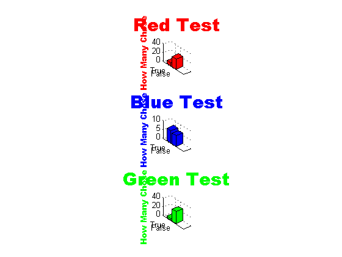
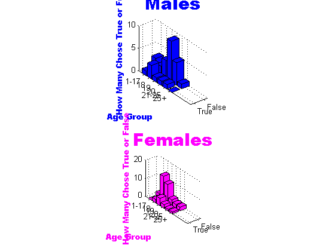

Courtney Sanford, Emma Johnson, and Aaron Davis
We pledge the Honor Code.
Contents
Assignment Introduction: Final Project
In this assignment, we take user input using GUIs to get participants'
age, gender, and color selection given one of three different prompts.
In the prompt questions, we capitalize a letter in one of the color
choices to see if that capitalized letter subtly encourages the person
being surveyed to select that color. Their choice, along with the gender
and age, is then stored in a matrix to be analyzed using a variety of
different graphs.
Individual Color Tests
run ('testred');
run ('testblue');
run ('testgreen');
Individual Color Graphs
run ('final_small_graphs');

Cumulative 3-D Graph
run ('final_big_graph');

Conclusion
Through the graphs we can see that there's actually little correlation
between our "suggested" color and the color chosen by users. However,
there is a higher proportion of blues selected, perhaps indicating that
position is a greater factor in choice than grammatical suggestions like
capitalization.